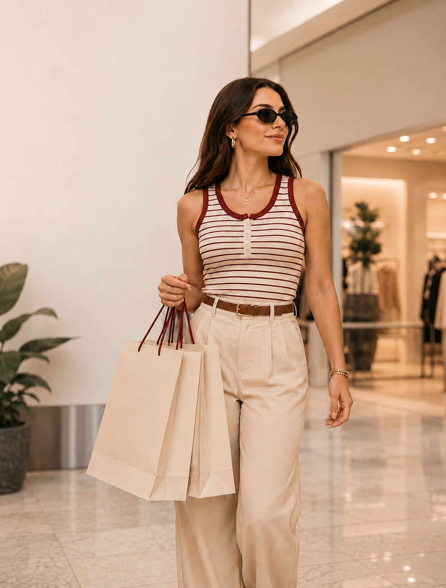

01A primavera não pede permissão.
Setembro chega e o armário inteiro parece pesado demais. Não é impressão: é o corpo pedindo tecido que respira, cor que reflete luz e roupa que não precisa de camada por cima.
A leitura da estação começa pelo tecido. Viscose, linho e algodão de trama aberta voltam a dominar as araras porque resolvem o problema mais brasileiro de todos: o dia que amanhece em 18 graus e fecha em 31. São peças que funcionam nas duas pontas do termômetro sem exigir troca de look.
A silhueta também muda. Depois de temporadas de alfaiataria estruturada, a primavera pede caimento solto — vestido reto, calça de cintura confortável, camisa que não marca. A regra prática: se a peça precisa de ajuste para ficar boa, ela provavelmente não é uma peça de primavera.
E há o gesto mais simples de todos, que quase ninguém faz: tirar do armário o que não vai ser usado. A estação fica mais fácil quando as opções erradas saem da frente.
Ver peças de primavera